第二章 智能体发展史¶
为了深刻理解现代智能体为何呈现出如今的形态，以及其核心设计思想的由来，本章将回溯历史：从人工智能领域的古典时代出发，探寻最早的“智能”如何在逻辑与符号的规则体系中被定义；继而见证从单一、集中的智能模型到分布式、协作式智能思想的重大转折；最终理解“学习”范式如何彻底改变了智能体获取能力的方式，并催生出我们今天所见的现代智能体。
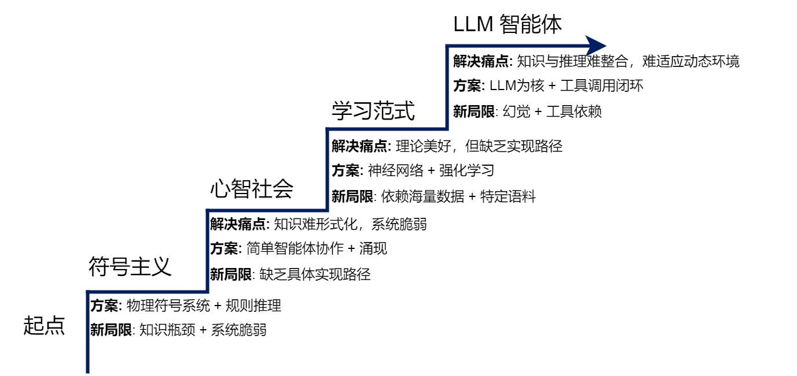
图 2.1 AI智能体的演进阶梯
如图2.1所示，每一个新范式的出现，都是为了解决上一代范式的核心“痛点”或根本局限。 而新的解决方案在带来能力飞跃的同时，也引入了新的、在当时难以克服的“局限”，而这又为下一代范式的诞生埋下了伏笔。理解这一“问题驱动”的迭代历程，能帮助我们更深刻地把握现代智能体技术选型背后的深层原因与历史必然性。
2.1 基于符号与逻辑的早期智能体¶
人工智能领域的早期探索，深受数理逻辑和计算机科学基本原理的影响。在那个时代，研究者们普遍持有一种信念：人类的智能，尤其是逻辑推理能力，可以被形式化的符号体系所捕捉和复现。这一核心思想催生了人工智能的第一个重要范式——符号主义（Symbolicism），也被称为“逻辑AI”或“传统AI”。
在符号主义看来，智能行为的核心是基于一套明确规则对符号进行操作。因此，一个智能体可以被视为一个物理符号系统：它通过内部的符号来表示外部世界，并通过逻辑推理来规划行动。这个时代的智能体，其“智慧”完全来源于设计者预先编码的知识库和推理规则，而非通过自主学习获得。
2.1.1 物理符号系统假说¶
符号主义时代的理论根据，是1976年由艾伦·纽厄尔（Allen Newell）和赫伯特·西蒙（Herbert A. Simon）共同提出的物理符号系统假说（PhysicalSymbol SystemHypothesis, PSSH）[1]。这两位图灵奖得主通过这一假说，为在计算机上实现通用人工智能提供了理论指导和判定标准。
该假说包含两个核心论断：
- 充分性论断：任何一个物理符号系统，都具备产生通用智能行为的充分手段。
- 必要性论断：任何一个能够展现通用智能行为的系统，其本质必然是一个物理符号系统。
这里的物理符号系统指的是一个能够在物理世界中存在的系统，它由一组可被区分的符号和一系列对这些符号进行操作的过程组成，其构成元素如图2.2所示。这些符号可以组合成更复杂的结构（例如表达式），而过程则可以创建、修改、复制和销毁这些符号结构。
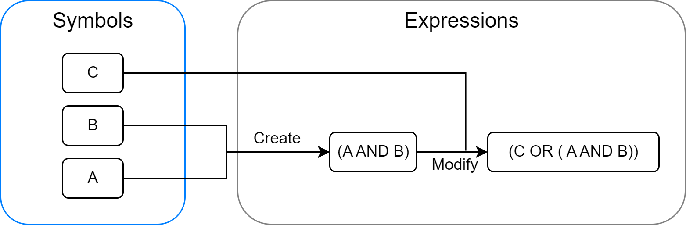
图 2.2 物理符号系统的构成元素
简而言之，PSSH大胆地宣称：智能的本质，就是符号的计算与处理。
这个假说具有深远的影响。它将对人类心智这一模糊、复杂的哲学问题的研究，转化为了一个可以在计算机上进行工程化实现的具体问题。它为早期人工智能研究者注入了强大的信心，即只要我们能找到正确的方式来表示知识并设计出有效的推理算法，就一定能创造出与人类媲美的机器智能。整个符号主义时代的研究，从专家系统到自动规划，几乎都是在这一假说的指引下展开的。
2.1.2 专家系统¶
在物理符号系统假说的直接影响下，专家系统（Expert System）成为符号主义时代最重要、最成功的应用成果。专家系统的核心目标，是模拟人类专家在特定领域内解决问题的能力。它通过将专家的知识和经验编码成计算机程序，使其能够在面对相似问题时，给出媲美甚至超越人类专家的结论或建议。
一个典型的专家系统通常由知识库、推理机、用户界面等几个核心部分构成，其通用架构如图2.3所示。
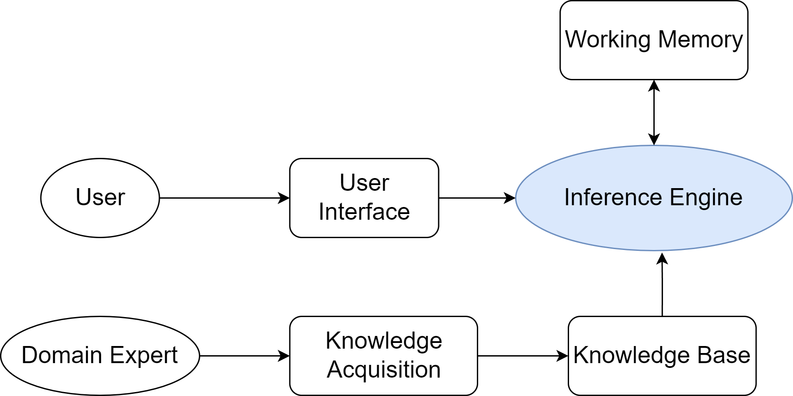
图 2.3 专家系统的通用架构
这种架构清晰地体现了知识与推理相分离的设计思想，是符号主义AI的重要特征。
知识库与推理机
专家系统的“智能”主要源于其两大核心组件：知识库和推理机。
- 知识库（Knowledge Base）：这是专家系统的知识存储中心，用于存放领域专家的知识和经验。知识表示（Knowledge Representation）是构建知识库的关键。在专家系统中，最常用的一种知识表示方法是产生式规则（Production Rules），即一系列“IF-THEN”形式的条件语句。例如：IF 病人有发烧症状 AND 咳嗽 THEN 可能患有呼吸道感染。这些规则将特定情境（IF部分，条件）与相应的结论或行动（THEN部分，结论）关联起来。一个复杂的专家系统可能包含成百上千条这样的规则，共同构成一个庞大的知识网络。
- 推理机（Inference Engine）：推理机是专家系统的核心计算引擎。它是一个通用的程序，其任务是根据用户提供的事实，在知识库中寻找并应用相关的规则，从而推导出新的结论。推理机的工作方式主要有两种：
- 正向链（Forward Chaining）：从已知事实出发，不断匹配规则的IF部分，触发THEN部分的结论，并将新结论加入事实库，直到最终推导出目标或无新规则可匹配。这是一种“数据驱动”的推理方式。
- 反向链（Backward Chaining）：从一个假设的目标（比如“病人是否患有肺炎”）出发，寻找能够推导出该目标的规则，然后将该规则的IF部分作为新的子目标，如此递归下去，直到所有子目标都能被已知事实所证明。这是一种“目标驱动”的推理方式。
应用案例与分析：MYCIN系统
MYCIN是历史上最著名、最具影响力的专家系统之一，由斯坦福大学于20世纪70年代开发[2]。它被设计用于辅助医生诊断细菌性血液感染并推荐合适的抗生素治疗方案。
- 工作原理：MYCIN通过与医生进行问答式交互来收集病人的症状、病史和化验结果。其知识库包含了约600条由医学专家提供的“IF-THEN”规则。推理机主要采用反向链的方式工作：从“确定致病菌”这一最高目标出发，反向推导需要哪些证据和条件，然后向医生提问以获取这些信息。其简化的工作流程如图2.4所示。
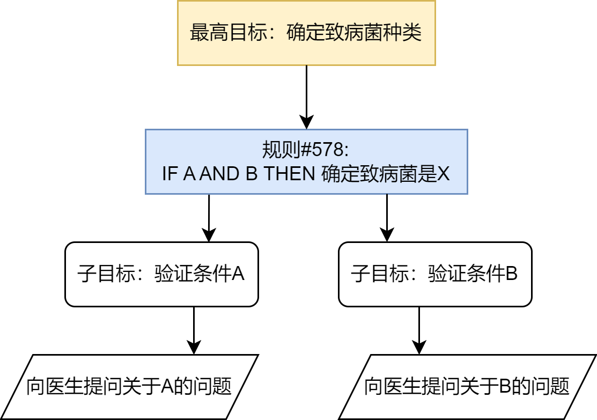
图 2.4 MYCIN反向链推理流程示意图
- 不确定性处理：医学诊断充满了不确定性。MYCIN的一个重要创新是引入了置信因子（Certainty Factor, CF）的概念，用一个-1到1之间的数值来表示一个结论的可信度。这使得系统能够处理不确定的、模糊的医学知识，并给出带有可信度评估的诊断结果，这比简单的布尔逻辑更贴近现实世界。
- 成就与意义：在一项评估中，MYCIN在血液感染诊断方面的表现超过了非专业医生，甚至达到了人类专家的水平。它的成功雄辩地证明了物理符号系统假说的有效性：通过精心的知识工程和符号推理，机器确实可以在高度复杂的专业领域展现出卓越的“智能”。MYCIN不仅是专家系统发展史上的一个里程碑，也为后续人工智能在各个垂直领域的商业化应用铺平了道路。
2.1.3 SHRDLU¶
如果说专家系统展示了符号AI在专业领域的“深度”，那么由特里·威诺格拉德（Terry Winograd）于1968-1970年开发的SHRDLU项目[3]，则在“广度”上实现了革命性的突破。如图2.5所示，SHRDLU旨在构建一个能在“积木世界”这一微观环境中，通过自然语言与人类流畅交互的综合性智能体。“积木世界”是一个模拟的三维虚拟空间，其中包含不同形状、颜色和大小的积木，以及一个可以抓取和移动它们的虚拟机械臂。用户通过自然语言向SHRDLU下达指令或提问，SHRDLU则在虚拟世界中执行动作或给出文字回答。
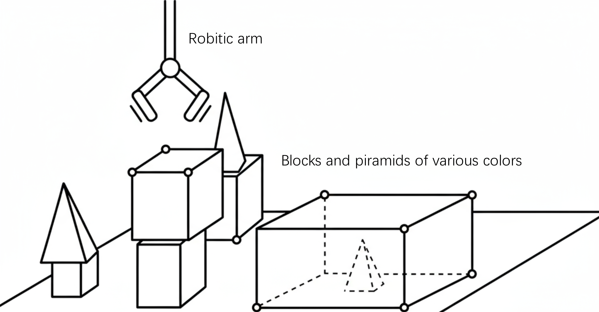
图 2.5 SHRDLU的“积木世界”交互界面
SHRDLU在当时引起广泛关注，主要原因在于它首次将多个独立的人工智能模块（如语言解析、规划、记忆）集成在一个统一的系统中，并使它们协同工作：
- 自然语言理解：SHRDLU能够解析结构复杂且含有歧义的英语句子。它不仅能理解直接的命令（如
Pick up a big red block.），还能处理更复杂的指令，例如： - 指代消解：
Find a block which is taller than the one you are holding and put it into the box.在这条指令中，系统需要理解the one you are holding指代的是当前机械臂正抓取的物体。 - 上下文记忆：用户可以说
Grasp the pyramid.，然后接着问What does the box contain?，系统能够联系上下文进行回答。 - 规划与行动：在理解指令后，SHRDLU能够自主规划出一系列必要的动作来完成任务。例如，如果指令是“把蓝色积木放到红色积木上”，而红色积木上已经有另一个绿色积木，系统会规划出“先把绿色积木移开，再把蓝色积木放上去”的动作序列。
- 记忆与问答：SHRDLU拥有关于其所处环境和自身行为的记忆。用户可以就此提问，例如：
- 询问世界状态：
Is there a large block behind a pyramid? - 询问行为历史：
Did you touch any pyramid before you put the green one on the little cube? - 询问行为动机：
Why did you pick up the red block?SHRDLU可以回答：BECAUSE YOU ASKED ME TO.
SHRDLU的历史地位与影响主要体现在三个方面：
- 综合性智能的典范：在SHRDLU之前，AI研究大多聚焦于单一功能。它首次将语言理解、推理规划与行动记忆等多个AI模块集成于统一系统，其“感知-思考-行动”的闭环设计，奠定了现代智能体研究的基础。
- 微观世界研究方法的普及：它的成功证明了在一个规则明确的简化环境中，探索和验证复杂智能体基本原理的可行性，这一方法深刻影响了后续的机器人学与AI规划研究。
- 引发的乐观与反思：SHRDLU的成功激发了对AGI的早期乐观预期，但其能力又严格局限于积木世界。这种局限性引发了AI领域关于“符号处理”与“真正理解”之间差异的长期思辨，揭示了通往通用智能的深层挑战。
2.1.4 符号主义面临的根本性挑战¶
尽管早期项目成就显著，但从20世纪80年代起，符号主义AI在从“微观世界”走向开放、复杂的现实世界时，遇到了其方法论固有的根本性难题。这些难题主要可归结为两大类：
（1）常识知识与知识获取瓶颈
符号主义智能体的“智能”完全依赖于其知识库的质量和完备性。然而，如何构建一个能够支撑真实世界交互的知识库，被证明是一项极其艰巨的任务，主要体现在两个方面：
- 知识获取瓶颈（Knowledge Acquisition Bottleneck）：专家系统的知识需要由人类专家和知识工程师通过繁琐的访谈、提炼和编码过程来构建。这个过程成本高昂、耗时漫长，且难以规模化。更重要的是，人类专家的许多知识是内隐的、直觉性的，很难被清晰地表达为“IF-THEN”规则。试图将整个世界的知识都进行手工符号化，被认为是一项几乎不可能完成的任务。
- 常识问题（Common-sense Problem）：人类行为依赖于庞大的常识背景（例如，“水是湿的”、“绳子可以拉不能推”），但符号系统除非被明确编码，否则对此一无所知。为广阔、模糊的常识建立完备的知识库至今仍是重大挑战，Cyc项目[4]历经数十年努力，其成果和应用仍然非常有限。
（2）框架问题与系统脆弱性
除了知识层面的挑战，符号主义在处理动态变化的世界时也遇到了逻辑上的困境。
- 框架问题（Frame Problem）：在一个动态世界中，智能体执行一个动作后，如何高效判断哪些事物未发生改变是一个逻辑难题[5]。为每个动作显式地声明所有不变的状态，在计算上是不可行的，而人类却能毫不费力地忽略不相关的变化。
- 系统脆弱性（Brittleness）：符号系统完全依赖预设规则，导致其行为非常“脆弱”。一旦遇到规则之外的任何微小变化或新情况，系统便可能完全失灵，无法像人类一样灵活变通。SHRDLU的成功，也正是因为它运行在一个规则完备的封闭世界里，而真实世界充满了例外。
2.2 构建基于规则的聊天机器人¶
在探讨了符号主义的理论挑战后，本节我们将通过一个具体的编程实践，来直观地感受基于规则的系统是如何工作的。我们将尝试复现人工智能历史上一个极具影响力的早期聊天机器人——ELIZA。
2.2.1 ELIZA 的设计思想¶
ELIZA是由麻省理工学院的计算机科学家约瑟夫·魏泽鲍姆（Joseph Weizenbaum）于1966年发布的一个计算机程序[6]，是早期自然语言处理领域的著名尝试之一。ELIZA并非一个单一的程序，而是一个可以执行不同“脚本”的框架。其中，最广为人知也最成功的脚本是“DOCTOR”，它模仿了一位罗杰斯学派的非指导性心理治疗师。
ELIZA的工作方式极其巧妙：它从不正面回答问题或提供信息，而是通过识别用户输入中的关键词，然后应用一套预设的转换规则，将用户的陈述转化为一个开放式的提问。例如，当用户说“我为我的男朋友感到难过”时，ELIZA可能会识别出关键词“我为……感到难过”，并应用规则生成回应：“你为什么会为你的男朋友感到难过？”
魏泽鲍姆的设计思想并非要创造一个真正能够“理解”人类情感的智能体，恰恰相反，他想证明的是，通过一些简单的句式转换技巧，机器可以在完全不理解对话内容的情况下，营造出一种“智能”和“共情”的假象。然而，出乎他意料的是，许多与ELIZA交互过的人（包括他的秘书）都对其产生了情感上的依赖，深信它能够理解自己。
本节的实践目标即为复现ELIZA的核心机制，以深入理解这种规则驱动方法的优势与根本局限。
2.2.2 模式匹配与文本替换¶
ELIZA的算法流程基于模式匹配（Pattern Matching）与文本替换（Text Substitution），可被清晰地分解为以下四个步骤：
- 关键词识别与排序：规则库为每个关键词（如
mother,dreamed,depressed）设定一个优先级。当输入包含多个关键词时，程序会选择优先级最高的关键词所对应的规则进行处理。 - 分解规则：找到关键词后，程序使用带通配符（
*）的分解规则来捕获句子的其余部分。 - 规则示例：
* my * - 用户输入：
"My mother is afraid of me" - 捕获结果：
["", "mother is afraid of me"] - 重组规则：程序从与分解规则关联的一组重组规则中，选择一条来生成回应（通常随机选择以增加多样性），并可选择性地使用上一步捕获的内容。
- 规则示例：
"Tell me more about your family." - 生成输出：
"Tell me more about your family." - 代词转换：在重组前，程序会进行简单的代词转换（如
I→you,my→your），以维持对话的连贯性。
整个工作流程可以用一个简单的伪代码思路来表示：
FUNCTION generate_response(user_input):
// 1. 将用户输入拆分成单词
words = SPLIT(user_input)
// 2. 寻找优先级最高的关键词规则
best_rule = FIND_BEST_RULE(words)
IF best_rule is NULL:
RETURN a_generic_response() // 例如:"Please go on."
// 3. 使用规则分解用户输入
decomposed_parts = DECOMPOSE(user_input, best_rule.decomposition_pattern)
IF decomposition_failed:
RETURN a_generic_response()
// 4. 对分解出的部分进行代词转换
transformed_parts = TRANSFORM_PRONOUNS(decomposed_parts)
// 5. 使用重组规则生成回应
response = REASSEMBLE(transformed_parts, best_rule.reassembly_patterns)
RETURN response
通过这套机制，ELIZA成功地将复杂的自然语言理解问题，简化为了一个可操作的、基于规则的模式匹配游戏。
2.2.3 核心逻辑的实现¶
现在，我们将上一节描述的技术原理转化为一个简单的、可运行的Python函数。下面的代码实现了一个迷你版的ELIZA，它包含了一小部分规则，但足以展示其核心工作机制。
import re
import random
# 定义规则库:模式(正则表达式) -> 响应模板列表
rules = {
r'I need (.*)': [
"Why do you need {0}?",
"Would it really help you to get {0}?",
"Are you sure you need {0}?"
],
r'Why don\'t you (.*)\?': [
"Do you really think I don't {0}?",
"Perhaps eventually I will {0}.",
"Do you really want me to {0}?"
],
r'Why can\'t I (.*)\?': [
"Do you think you should be able to {0}?",
"If you could {0}, what would you do?",
"I don't know -- why can't you {0}?"
],
r'I am (.*)': [
"Did you come to me because you are {0}?",
"How long have you been {0}?",
"How do you feel about being {0}?"
],
r'.* mother .*': [
"Tell me more about your mother.",
"What was your relationship with your mother like?",
"How do you feel about your mother?"
],
r'.* father .*': [
"Tell me more about your father.",
"How did your father make you feel?",
"What has your father taught you?"
],
r'.*': [
"Please tell me more.",
"Let's change focus a bit... Tell me about your family.",
"Can you elaborate on that?"
]
}
# 定义代词转换规则
pronoun_swap = {
"i": "you", "you": "i", "me": "you", "my": "your",
"am": "are", "are": "am", "was": "were", "i'd": "you would",
"i've": "you have", "i'll": "you will", "yours": "mine",
"mine": "yours"
}
def swap_pronouns(phrase):
"""
对输入短语中的代词进行第一/第二人称转换
"""
words = phrase.lower().split()
swapped_words = [pronoun_swap.get(word, word) for word in words]
return " ".join(swapped_words)
def respond(user_input):
"""
根据规则库生成响应
"""
for pattern, responses in rules.items():
match = re.search(pattern, user_input, re.IGNORECASE)
if match:
# 捕获匹配到的部分
captured_group = match.group(1) if match.groups() else ''
# 进行代词转换
swapped_group = swap_pronouns(captured_group)
# 从模板中随机选择一个并格式化
response = random.choice(responses).format(swapped_group)
return response
# 如果没有匹配任何特定规则，使用最后的通配符规则
return random.choice(rules[r'.*'])
# 主聊天循环
if __name__ == '__main__':
print("Therapist: Hello! How can I help you today?")
while True:
user_input = input("You: ")
if user_input.lower() in ["quit", "exit", "bye"]:
print("Therapist: Goodbye. It was nice talking to you.")
break
response = respond(user_input)
print(f"Therapist: {response}")
>>>
Therapist: Hello! How can I help you today?
You: I am feeling sad today.
Therapist: How long have you been feeling sad today?
You: I need some help with my project.
Therapist: Are you sure you need some help with your project?
You: My mother is not happy with my work.
Therapist: Tell me more about your mother.
You: quit
Therapist: Goodbye. It was nice talking to you.
通过上述的编程实践，我们可以直观地总结出规则驱动系统的根本局限性，这些局限正是对 2.1.4 节中符号主义理论挑战的直接印证：
- 缺乏语义理解：系统不理解词义。例如，面对“I am not happy”的输入，它仍会机械地匹配
I am (.*)规则并生成语义不通的回应，因为它无法理解否定词“not”的作用。 - 无上下文记忆：系统是无状态的（Stateless），每次回应仅基于当前单句输入，无法进行连贯的多轮对话。
- 规则的扩展性问题：尝试增加更多规则会导致规则库的规模爆炸式增长，规则间的冲突与优先级管理将变得极其复杂，最终导致系统难以维护。
然而，尽管存在这些显而易见的缺陷，ELIZA在当时却产生了著名的“ELIZA效应”，许多用户相信它能理解自己。这种智能的幻觉主要源于其巧妙的对话策略（如扮演被动的提问者、使用开放式模板）以及人类天生的情感投射心理。
ELIZA的实践清晰地揭示了符号主义方法的核心矛盾：系统看似智能的表现，完全依赖于设计者预先编码的规则。然而，面对真实世界语言的无限可能性，这种穷举式的方法注定不可扩展。系统没有真正的理解，只是在执行符号操作，这正是其脆弱性的根源。
2.3 马文·明斯基的心智社会¶
符号主义的探索和ELIZA的实践，共同指向了一个问题：通过预设规则构建的、单一的、集中的推理引擎，似乎难以通向真正的智能。无论规则库多么庞大，系统在面对真实世界的模糊性、复杂性和无穷变化时，总是显得僵化而脆弱。这一困境促使一些顶尖的思考者开始反思人工智能最底层的设计哲学。其中，马文·明斯基（Marvin Minsky）没有继续尝试为单一推理核心添加更多规则，而是在他的《心智社会》（The Society of Mind）[7] 一书中提出了一个革命性的问题："What magical trick makes us intelligent? The trick is that there is no trick. The power of intelligence stems from our vast diversity, not from any single, perfect principle."
2.3.1 对单一整体智能模型的反思¶
20世纪70至80年代，符号主义的局限性日益明显。专家系统虽然在高度垂直的领域取得了成功，但它们无法拥有儿童般的常识；SHRDLU虽然能在一个封闭的积木世界中表现出色，但它无法理解这个世界之外的任何事情；ELIZA虽然能模仿对话，但它对对话内容本身一无所知。这些系统都遵循着一种自上而下（Top-down）的设计思路：一个全知全能的中央处理器，根据一套统一的逻辑规则来处理信息和做出决策。
面对这种普遍的失败，明斯基开始提出一系列根本性的问题：
- “理解”是什么？ 当我们说我们理解一个故事时，这是一种单一的能力吗？还是说，它其实是视觉化能力、逻辑推理能力、情感共鸣能力、社会关系常识等数十种不同心智过程协同工作的结果？
- “常识”是什么？ 常识是一个包含了数百万条逻辑规则的庞大知识库吗（如Cyc项目的尝试）？还是说，它是一种分布式的、由无数具体经验和简单规则片段交织而成的网络？
- 智能体应该如何构建？ 我们是否应该继续追求一个完美的、统一的逻辑系统，还是应该承认，智能本身就是“不完美”的、由许多功能各异、甚至会彼此冲突的简单部分组成的大杂烩？
这些问题直指单一整体智能模型的核心弊端。该类模型试图用一种统一的表示和推理机制来解决所有问题，但这与我们观察到的自然智能（尤其是人类智能）的运作方式相去甚远。明斯基认为，强行将多样化的心智活动塞进一个僵化的逻辑框架中，正是导致早期人工智能研究停滞不前的根源。
正是基于这样的反思，明斯基提出了一个颠覆性的构想，他不再将心智视为一个金字塔式的层级结构，而是将其看作一个扁平化的、充满了互动与协作的“社会”。
2.3.2 作为协作体的智能¶
在明斯基的理论框架中，智能体的定义与我们第一章讨论的现代智能体有所不同。这里的智能体指的是一个极其简单的、专门化的心智过程，它自身是“无心”的。例如，一个负责识别线条的LINE-FINDER智能体，或一个负责抓握的GRASP智能体。
这些简单的智能体被组织起来，形成功能更强大的机构（Agency）。一个机构是一组协同工作的智能体，旨在完成一个更复杂的任务。例如，一个负责搭积木的BUILD机构，可能由SEE、FIND、GET、PUT等多个下层智能体或机构组成。它们之间通过去中心化的激活与抑制信号相互影响，形成动态的控制流。
涌现（Emergence）是理解心智社会理论的关键。复杂的、有目的性的智能行为，并非由某个高级智能体预先规划，而是从大量简单的底层智能体之间的局部交互中自发产生的。
让我们以经典的“搭建积木塔”任务为例，来说明这一过程，如图2.6所示。当一个高层目标（如“我要搭一个塔”）出现时，它会激活一个名为BUILD-TOWER的高层机构。
BUILD-TOWER机构并不知道如何执行具体的物理动作，它的唯一作用是激活它的下属机构，比如BUILDER。BUILDER机构同样很简单，它可能只包含一个循环逻辑：只要塔还没搭完，就激活ADD-BLOCK机构。ADD-BLOCK机构则负责协调更具体的子任务，它会依次激活FIND-BLOCK、GET-BLOCK和PUT-ON-TOP这三个子机构。- 每一个子机构又由更底层的智能体构成。例如，
GET-BLOCK机构会激活视觉系统中的SEE-SHAPE智能体、运动系统中的REACH和GRASP智能体。
在这个过程中，没有任何一个智能体或机构拥有整个任务的全局规划。GRASP只负责抓握，它不知道什么是塔；BUILDER只负责循环，它不知道如何控制手臂。然而，当这个由无数“无心”的智能体组成的社会，通过简单的激活和抑制规则相互作用时，一个看似高度智能的行为，搭建积木塔，就自然而然地涌现了出来。
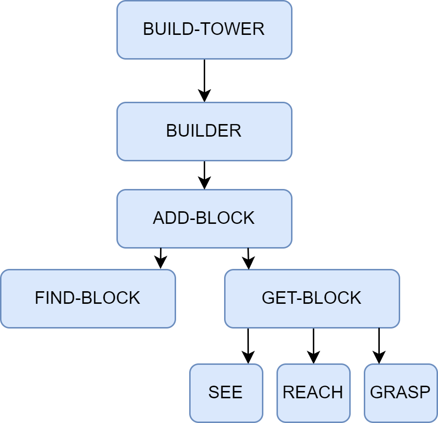
图 2.6 “心智社会”中搭建积木塔行为的涌现机制示意图
2.3.3 对多智能体系统的理论启发¶
心智社会理论最深远的影响，在于它为分布式人工智能（Distributed Artificial Intelligence, DAI）以及后来的多智能体系统（Multi-Agent System, MAS）提供了重要的概念基础。它引出研究者们的思考：
如果一个心智内部的智能，是通过大量简单智能体的协作而涌现的，那么，在多个独立的、物理上分离的计算实体（计算机、机器人）之间，是否也能通过协作涌现出更强大的“群体智能”？
这个问题的提出，直接将研究焦点从“如何构建一个全能的单一智能体”转向了“如何设计一个高效协作的智能体群体”。具体而言，心智社会在以下几个方面直接启发了多智能体系统的研究：
- 去中心化控制（Decentralized Control）：理论的核心在于不存在中央控制器。这一思想被MAS领域完全继承，如何设计没有中心节点的协调机制和任务分配策略，成为了MAS的核心研究课题之一。
- 涌现式计算（Emergent Computation）：复杂问题的解决方案可以从简单的局部交互规则中自发产生。这启发了MAS中大量基于涌现思想的算法，如蚁群算法、粒子群优化等，用于解决复杂的优化和搜索问题。
- 智能体的社会性（Agent Sociality）：明斯基的理论强调了智能体之间的交互（激活、抑制）。MAS领域将其进一步扩展，系统地研究智能体之间的通信语言（如ACL）、交互协议（如契约网）、协商策略、信任模型乃至组织结构，从而构建起真正的计算社会。
可以说，明斯基的“心智社会”理论，为AI研究者理解“群体智能”的内在构造提供了重要的分析框架。它为后来的研究者们提供了一套全新的视角，去探索由独立的、自治的、具备社会能力的计算智能体所构成的复杂系统，从而正式开启了多智能体系统研究的序幕。
2.4 学习范式的演进与现代智能体¶
前文探讨的“心智社会”理论，在哲学层面为群体智能和去中心化协作指明了方向，但实现路径尚不明确。与此同时，符号主义在应对真实世界复杂性时暴露的根本性挑战也表明仅靠预先编码的规则无法构建真正鲁棒的智能。
这两条线索共同指向了一个问题：如果智能无法被完全设计，那么它是否可以被学习出来？
这一设问开启了人工智能的“学习”时代。其核心目标不再是手动编码知识，而是构建能从经验和数据中自动获取知识与能力的系统。本节将追溯这一范式的演进历程：从联结主义奠定的学习基础，到强化学习实现的交互式学习，直至今日由大型语言模型驱动的现代智能体。
2.4.1 从符号到联结¶
作为对符号主义局限性的直接回应，联结主义（Connectionism）在20世纪80年代重新兴起。与符号主义自上而下、依赖明确逻辑规则的设计哲学不同，联结主义是一种自下而上的方法，其灵感来源于对生物大脑神经网络结构的模仿[8]。它的核心思想可以概括为以下几点：
- 知识的分布式表示：知识并非以明确的符号或规则形式存储在某个知识库中，而是以连接权重的形式，分布式地存储在大量简单的处理单元（即人工神经元）的连接之间。整个网络的连接模式本身就构成了知识。
- 简单的处理单元：每个神经元只执行非常简单的计算，如接收来自其他神经元的加权输入，通过一个激活函数进行处理，然后将结果输出给下一个神经元。
- 通过学习调整权重：系统的智能并非来自于设计者预先编写的复杂程序，而是来自于“学习”过程。系统通过接触大量样本，根据某种学习算法（如反向传播算法）自动、迭代地调整神经元之间的连接权重，从而使得整个网络的输出逐渐接近期望的目标。
在这种范式下，智能体不再是一个被动执行规则的逻辑推理机，而是一个能够通过经验自我优化的适应性系统。如图2.7所示，这代表了构建智能体核心思想的根本性转变。符号主义试图将人类的知识显式地编码给机器，而联结主义则试图创造出能够像人类一样学习知识的机器。
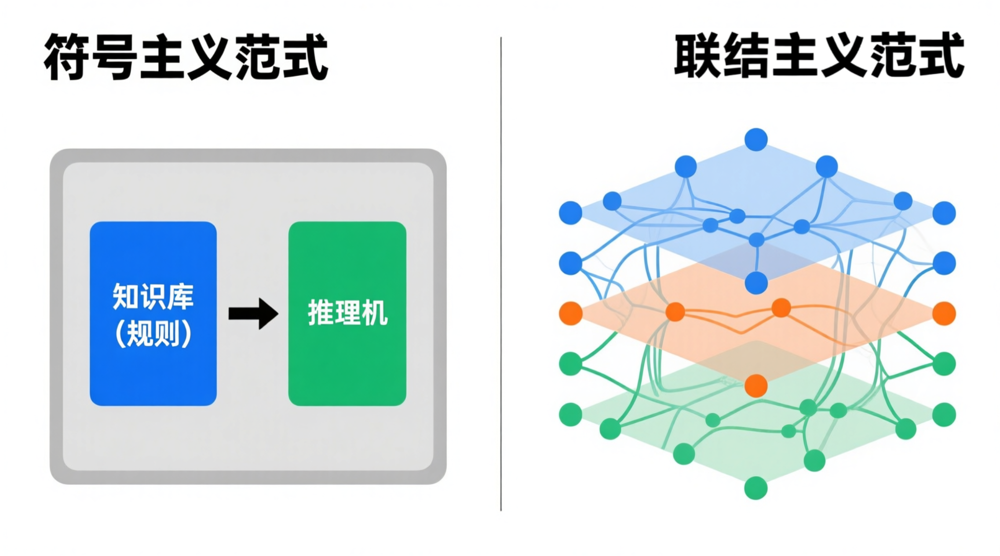
图 2.7 符号主义与联结主义范式对比
联结主义的兴起，特别是深度学习在21世纪的成功，为智能体赋予了强大的感知和模式识别能力，使其能够直接从原始数据（如图像、声音、文本）中理解世界，这是符号主义时代难以想象的。然而，如何让智能体学会在与环境的动态交互中做出最优的序贯决策，则需要另一种学习范式的补充。
2.4.2 基于强化学习的智能体¶
联结主义主要解决了感知问题（例如，“这张图片里有什么？”），但智能体更核心的任务是进行决策（例如，“在这种情况下，我应该做什么？”）。强化学习（Reinforcement Learning, RL）正是专注于解决序贯决策问题的学习范式。它并非直接从标注好的静态数据集中学习，而是通过智能体与环境的直接交互，在“试错”中学习如何最大化其长期收益。
以AlphaGo为例，其核心的自我对弈学习过程便是强化学习的经典体现[9]。在这个过程中，AlphaGo（智能体）通过观察棋盘的当前布局（环境状态），决定下一步棋的落子位置（行动）。一局棋结束后，根据胜负结果，它会收到一个明确的信号：赢了就是正向奖励，输了则是负向奖励。通过数百万次这样的自我对弈，AlphaGo不断调整其内部策略，逐渐学会了在何种棋局下选择何种行动，最有可能导向最终的胜利。这个过程完全是自主的，不依赖于人类棋谱的直接指导。
这种通过与环境互动、根据反馈信号来优化自身行为的学习机制，就是强化学习的核心框架。下面我们将详细拆解其基本构成要素和工作模式。
强化学习的框架可以用几个核心要素来描述：
- 智能体（Agent）：学习者和决策者。在AlphaGo的例子中，就是其决策程序。
- 环境（Environment）：智能体外部的一切，是智能体与之交互的对象。对AlphaGo而言，就是围棋的规则和对手。
- 状态（State, S）：对环境在某一时刻的特定描述，是智能体做出决策的依据。例如，棋盘上所有棋子的当前位置。
- 行动（Action, A）：智能体根据当前状态所能采取的操作。例如，在棋盘的某个合法位置上落下一子。
- 奖励（Reward, R）：环境在智能体执行一个行动后，反馈给智能体的一个标量信号，用于评价该行动在特定状态下的好坏。例如，在一局棋结束后，胜利获得+1的奖励，失败获得-1的奖励。
基于上述核心要素，强化学习智能体在一个“感知-行动-学习”的闭环中持续迭代，其工作模式如图2.8所示。
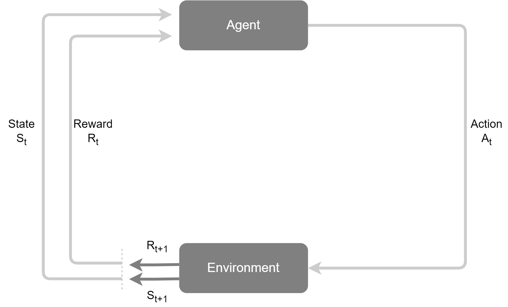
图 2.8 强化学习的核心交互循环
这个循环的具体步骤如下：
- 在时间步t，智能体观察到环境的当前状态\(S_{t}\)。
- 基于状态 \(S_{t}\)，智能体根据其内部的策略（Policy, π）选择一个行动 \(A_{t}\) 并执行它。策略本质上是一个从状态到行动的映射，定义了智能体的行为方式。
- 环境接收到行动 \(A_{t}\) 后，会转移到一个新的状态 \(S_{t+1}\)。
- 同时，环境会反馈给智能体一个即时奖励 \(R_{t+1}\)。
- 智能体利用这个反馈（新状态 \(S_{t+1}\) 和奖励 \(R_{t+1}\)）来更新和优化其内部策略，以便在未来做出更好的决策。这个更新过程就是学习。
智能体的学习目标，并非最大化某一个时间步的即时奖励，而是最大化从当前时刻开始到未来的累积奖励（Cumulative Reward），也称为回报（Return）。这意味着智能体需要具备“远见”，有时为了获得未来更大的奖励，需要牺牲当前的即时奖励（例如，围棋中的“弃子”策略）。通过在上述循环中不断探索、收集反馈并优化策略，智能体最终能够学会在复杂动态环境中进行自主决策和长期规划。
2.4.3 基于大规模数据的预训练¶
强化学习赋予了智能体从交互中学习决策策略的能力，但这通常需要海量的、针对特定任务的交互数据，导致智能体在学习之初缺乏先验知识，需要从零开始构建对任务的理解。无论是符号主义试图手动编码的常识，还是人类在决策时所依赖的背景知识，在RL智能体中都是缺失的。如何让智能体在开始学习具体任务前，就先具备对世界的广泛理解？这一问题的解决方案，最终在自然语言处理（Natural Language Processing, NLP）领域中浮现，其核心便是基于大规模数据的预训练（Pre-training）。
从特定任务到通用模型
在预训练范式出现之前，传统的自然语言处理模型通常是为单一特定任务（如情感分析、机器翻译）在专门标注的中小规模数据集上从零开始独立训练的。这种模式导致了几个问题：模型的知识面狭窄，难以将在一个任务中学到的知识泛化到另一个任务，并且每一个新任务都需要耗费大量的人力去标注数据。预训练与微调（Pre-training, Fine-tuning）范式的提出彻底改变了这一现状。其核心思想分为两步：
- 预训练阶段：首先在一个包含互联网级别海量文本数据的通用语料库上，通过自监督学习（Self-supervised Learning）的方式训练一个超大规模的神经网络模型。这个阶段的目标不是完成任何特定任务，而是学习语言本身内在的规律、语法结构、事实知识以及上下文逻辑。最常见的目标是“预测下一个词”。
- 微调阶段：完成预训练后，这个模型就已经学习到了和数据集有关的丰富知识。之后，针对特定的下游任务，只需使用少量该任务的标注数据对模型进行微调，即可让模型适应对应任务。
如图2.9所示，直观地展示了这一预训练与微调的完整流程：通用文本数据经过自监督学习形成基础模型，随后通过特定任务数据进行微调，最终适应各项下游任务。
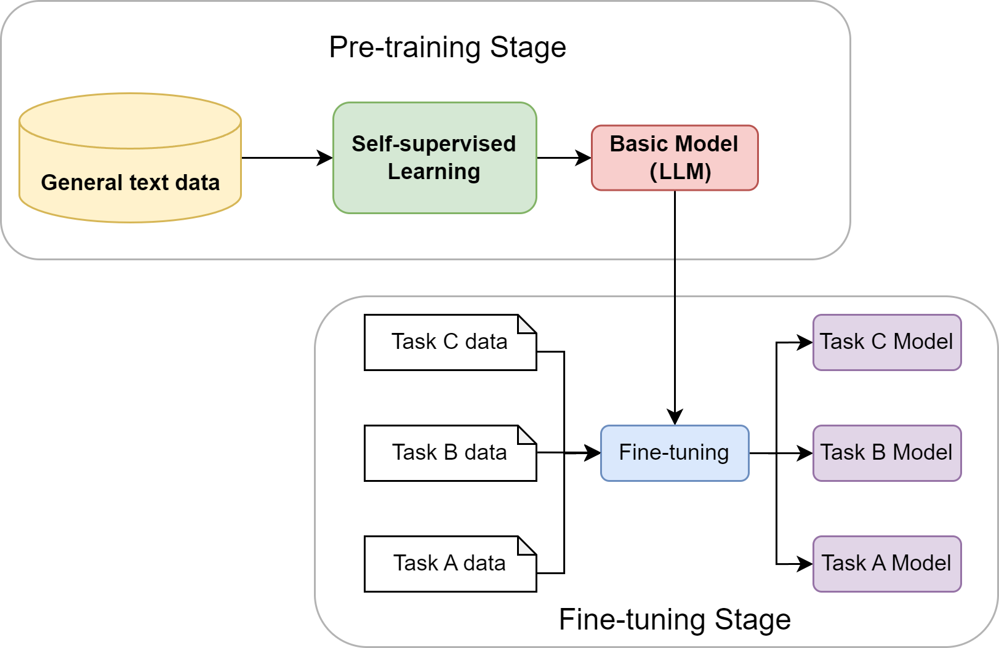
图 2.9 “预训练-微调”范式示意图
大型语言模型的诞生与涌现能力
通过在数万亿级别的文本上进行预训练，大型语言模型的神经网络权重实际上已经构建了一个关于世界知识的、高度压缩的隐式模型。它以一种全新的方式，解决了符号主义时代最棘手的“知识获取瓶颈”问题。更令人惊讶的是，当模型的规模（参数量、数据量、计算量）跨越某个阈值后，它们开始展现出未被直接训练的、预料之外的涌现能力（Emergent Abilities），例如：
- 上下文学习（In-context Learning）：无需调整模型权重，仅在输入中提供几个示例（Few-shot）甚至零个示例（Zero-shot），模型就能理解并完成新的任务。
- 思维链（Chain-of-Thought）推理：通过引导模型在回答复杂问题前，先输出一步步的推理过程，可以显著提升其在逻辑、算术和常识推理任务上的准确性。
这些能力的出现，标志着LLM不再仅仅是一个语言模型，它已经演变成了一个兼具海量知识库和通用推理引擎双重角色的组件。
至此，智能体发展的历史长河中，几大关键的技术拼图已经悉数登场：符号主义提供了逻辑推理的框架，联结主义和强化学习提供了学习与决策的能力，而大型语言模型则提供了前所未有的、通过预训练获得的世界知识和通用推理能力。下一节，我们将看到这些技术是如何在现代智能体的设计中融为一体的。
2.4.4 基于大语言模型的智能体¶
随着大型语言模型技术的飞速发展，以LLM为核心的智能体已成为人工智能领域的新范式。它不仅能够理解和生成人类语言，更重要的是，能够通过与环境的交互，自主地感知、规划、决策和执行任务。
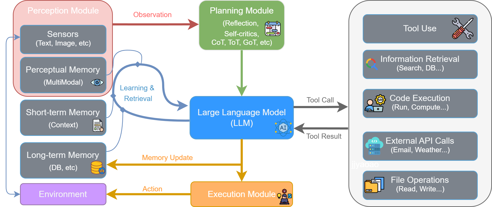
图 2.10 LLM驱动的智能体核心组件架构
如第一章所述，智能体与环境的交互可以被抽象为一个核心循环。LLM驱动的智能体通过一个由多个模块协同工作的、持续迭代的闭环流程来完成任务。该流程遵循图2.10所示的架构，具体步骤如下：
- 感知 (Perception) ：流程始于感知模块 (Perception Module)。它通过传感器从外部环境 (Environment) 接收原始输入，形成观察 (Observation)。这些观察信息（如用户指令、API返回的数据或环境状态的变化）是智能体决策的起点，处理后将被传递给思考阶段。
- 思考 (Thought) ：这是智能体的认知核心，对应图中的规划模块 (Planning Module) 和大型语言模型 (LLM) 的协同工作。
- 规划与分解：首先，规划模块接收观察信息，进行高级策略制定。它通过反思 (Reflection) 和自我批判 (Self-criticism) 等机制，将宏观目标分解为更具体、可执行的步骤。
- 推理与决策：随后，作为中枢的LLM 接收来自规划模块的指令，并与记忆模块 (Memory) 交互以整合历史信息。LLM进行深度推理，最终决策出下一步要执行的具体操作，这通常表现为一个工具调用 (Tool Call)。
- 行动 (Action) ：决策完成后，便进入行动阶段，由执行模块 (Execution Module) 负责。LLM生成的工具调用指令被发送到执行模块。该模块解析指令，从工具箱 (Tool Use) 中选择并调用合适的工具（如代码执行器、搜索引擎、API等）来与环境交互或执行任务。这个与环境的实际交互就是智能体的行动 (Action)。
- 观察 (Observation) 与循环 ：行动会改变环境的状态，并产生结果。
- 工具执行后会返回一个工具结果 (Tool Result) 给LLM，这构成了对行动效果的直接反馈。同时，智能体的行动改变了环境，从而产生了一个全新的环境状态。
- 这个“工具结果”和“新的环境状态”共同构成了一轮全新的观察 (Observation)。这个新的观察会被感知模块再次捕获，同时LLM会根据行动结果更新记忆 (Memory Update)，从而启动下一轮“感知-思考-行动”的循环。
这种模块化的协同机制与持续的迭代循环，构成了LLM驱动智能体解决复杂问题的核心工作流。
2.4.5 智能体发展关键节点概览¶
人工智能体的发展史并非一条笔直的单行道，而是几大核心思想流派长达半个多世纪交织、竞争与融合的历程。理解这一历程，有助于我们洞察当前智能体架构范式形成的深刻根源。
这其中，主要有三大思潮主导着不同时期的研究范式：
- 符号主义 (Symbolism) ：以赫伯特·西蒙 (Herbert A. Simon) 、明斯基 (Marvin Minsky) 等先驱为代表，认为智能的核心在于对符号的操作与逻辑推理。这一思想催生了能够理解自然语言指令的SHRDLU、知识驱动的专家系统以及在国际象棋领域取得巨大成功的“深蓝”计算机。
- 联结主义 (Connectionism) ：其灵感源于对大脑神经网络的模拟。尽管早期发展受限，但在杰弗里·辛顿 (Geoffrey Hinton) 等研究者的推动下，反向传播算法为神经网络的复苏奠定了基础。最终，随着深度学习时代的到来，这一思想通过卷积神经网络、Transformer等模型成为当前的主流。
- 行为主义 (Behaviorism) ：强调智能体通过与环境的互动和试错来学习最优策略，其现代化身为强化学习 。从早期的TD-Gammon到与深度学习结合并击败人类顶尖棋手的AlphaGo，这一流派为智能体赋予了从经验中习得复杂决策行为的能力。
进入21世纪20年代，这些思想流派以前所未有的方式深度融合。以GPT系列为代表的大语言模型，其本身是联结主义的产物，却成为了执行符号推理、进行工具调用和规划决策的核心“大脑”，形成了神经-符号结合的现代智能体架构。为了系统性地回顾这一发展脉络，下图2.11梳理了从20世纪50年代至今，人工智能体发展史上的关键理论、项目与事件，为读者提供一个清晰的全局概览，作为本章知识的沉淀。
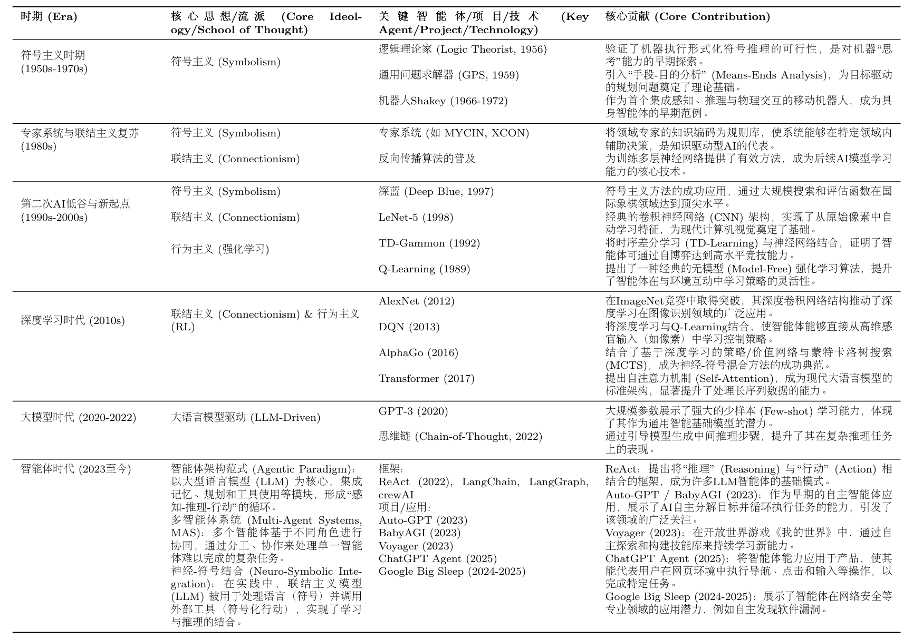
图 2.11 智能体发展演进时间线（未完全版）
得益于大语言模型的突破，智能体技术栈呈现出前所未有的活跃度和多样性。图2.12展示了当前AI Agent领域的一个典型技术栈全貌，涵盖了从底层模型到上层应用的各个环节。
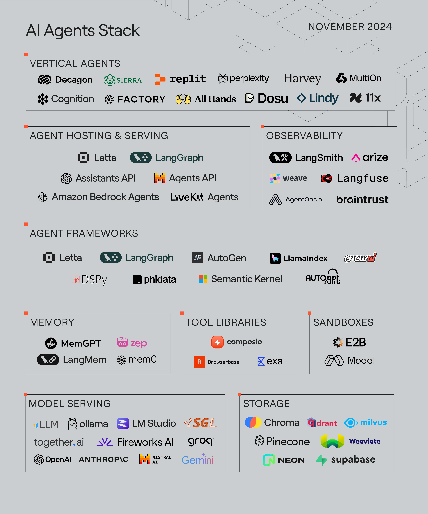
图 2.12 AI Agent 技术栈概览
该技术栈图由Letta公司于2024年11月发布[10]，它将AI智能体相关的工具、平台和服务进行了分层与分类，为我们理解当前的市场格局和技术选型提供了宝贵的参考。
2.5 本章小结¶
本章回顾了智能体发展的历史脉络，探索了其核心思想从诞生到演进的过程，内容涵盖了人工智能领域几次关键的范式革命：
- 符号主义的探索与局限：从人工智能的古典时代出发，本章阐述了以专家系统为代表的早期智能体是如何尝试通过“知识+推理”来模拟智能的。通过亲手构建一个基于规则的聊天机器人，我们深刻体会到这一范式的能力边界及其面临的根本性挑战。
- 分布式智能思想的萌芽：探讨了马文·明斯基的“心智社会”理论。这一革命性的思想揭示了复杂的整体智能可以从简单的局部单元的交互中涌现，为后续的多智能体系统研究提供了重要的哲学启发。
- 学习范式的演进：见证了智能体获取能力方式的根本性变革。从联结主义赋予智能体感知世界的能力，到强化学习使其学会在与环境的交互中进行最优决策，再到基于大规模数据预训练的大型语言模型（LLM）为其提供了前所未有的世界知识和通用推理能力。
- 现代智能体的诞生：最后，我们对LLM驱动智能体进行分析。通过对其核心组件（模型、记忆、规划、工具等）和工作原理的分析，我们理解了历史上的各种技术思想是如何在现代Agent的架构中实现技术融合的。
通过本章的学习，我们不仅理解了第一章所介绍的现代智能体从何而来，更能建立了一个关于智能体技术演进的宏观认知框架。可以发现，智能体的发展并非简单的技术迭代，而是一场关于如何定义“智能”、获取“知识”、进行“决策”的思想变革。
既然现代智能体的核心是大型语言模型，那么深入理解其底层原理便至关重要。下一章将聚焦于大语言模型本身，探讨其基本概念，为后续在多智能体系统中的高级应用打下坚实的基础。
习题¶
提示：以下的部分习题没有标准答案，旨在帮助学习者建立对智能体发展历史的系统性理解，并培养"以史为鉴"的技术洞察力。
-
物理符号系统假说[1]是符号主义时代的理论基石。请分析：
-
该假说的"充分性论断"和"必要性论断"分别是什么含义？
- 结合本章内容，说明符号主义智能体在实践中遇到的哪些问题对该假说的"充分性"提出了挑战？
-
大语言模型驱动的智能体是否符合物理符号系统假说？
-
专家系统MYCIN[2]在医疗诊断领域取得了显著成功，但最终并未大规模应用于临床实践。请思考：
提示：可以从技术、伦理、法律、用户接受度等多个角度分析
- 除了本章提到的"知识获取瓶颈"和"脆弱性"，还有哪些因素可能阻碍了专家系统在医疗等高风险领域的应用？
- 如果让现在的你设计一个医疗诊断智能体，你会如何设计系统来克服MYCIN的局限？
-
在哪些垂直领域中，基于规则的专家系统至今仍然是比深度学习更好的选择？请举例说明。
-
在2.2节中，我们实现了一个简化版的ELIZA聊天机器人。请在此基础上进行扩展实践：
提示：这是一道动手实践题，建议实际编写代码
- 为ELIZA添加3-5条新的规则，使其能够处理更多样化的对话场景（如谈论工作、学习、爱好等）
- 实现一个简单的"上下文记忆"功能：让ELIZA能够记住用户在对话中提到的关键信息（如姓名、年龄、职业），并在后续对话中引用
- 对比你扩展后的ELIZA与ChatGPT，列举至少3个维度上存在的本质差异
-
为什么基于规则的方法在处理开放域对话时会遇到"组合爆炸"问题并且难以扩展维护？能否使用数学的方法来说明？
-
马文·明斯基在"心智社会"理论[7]中提出了一个革命性的观点：智能源于大量简单智能体的协作，而非单一的完美系统。
-
在图2.6"搭建积木塔"的例子中，如果
GRASP智能体突然失效了，整个系统会发生什么？这种去中心化架构的优势和劣势是什么？ - 将"心智社会"理论与现在的一些多智能体系统（如CAMEL-Workforce、MetaGPT、CrewAI）进行对比，它们之间存在哪些关联和不同之处？
-
马文·明斯基认为智能体可以是"无心"的简单过程，然而现在的大语言模型和智能体往往都拥有强大的推理能力。这是否意味着"心智社会"理论在大语言模型时代不再适用了？
-
强化学习与监督学习是两种不同的学习范式。请分析：
-
用AlphaGo的例子说明强化学习的"试错学习"机制是如何工作的
- 为什么强化学习特别适合序贯决策问题？它与监督学习在数据需求上有什么本质区别？
- 现在我们需要训练一个会玩超级马里奥游戏的智能体。如果分别使用监督学习和强化学习，各需要什么数据？哪种方法对于这个任务来说更合适？
-
在大语言模型的训练过程中，强化学习起到了什么关键性的作用？
-
预训练-微调范式是现代人工智能领域的重要突破。请深入思考：
-
为什么说预训练解决了符号主义时代的"知识获取瓶颈"问题？它们在知识表示方式上有什么本质区别？
- 预训练模型的知识绝大部分来自互联网数据，这可能带来哪些问题？如何缓解以上问题？
-
你认为"预训练-微调"范式是否可能会被某种新范式取代？或者它会长期存在？
-
假设你要设计一个"智能代码审查助手"，它能够自动审查代码提交（Pull Request），概括代码的实现逻辑、检查代码质量、发现潜在BUG、提出改进建议。
-
如果在符号主义时代（1980年代）设计这个系统，你会如何实现？会遇到什么困难？
- 如果在没有大语言模型的深度学习时代（2015年左右），你会如何实现？
- 在当前的大语言模型和智能体的时代，你会如何设计这个智能体的架构？它应该包含哪些模块（参考图2.10）？
- 对比这三个时代的方案，说明智能体技术的演进如何使这个任务从"几乎不可能"变为"可行"
参考文献¶
[1] NEWELL A, SIMON H A. Computer science as empirical inquiry: symbols and search[J]. Communications of the ACM, 1976, 19(3): 113-126.
[2] BUCHANAN B G, SHORTLIFFE E H, ed. Rule-based expert systems: the MYCIN experiments of the Stanford Heuristic Programming Project[M]. Reading, Mass.: Addison-Wesley, 1984.
[3] WINOGRAD T. Understanding natural language[M]. New York: Academic Press, 1972.
[4] LENAT D B, GUHA R V. Cyc: a midterm report[J]. AI magazine, 1990, 11(3): 32.
[5] MCCARTHY J, HAYES P J. Some philosophical problems from the standpoint of artificial intelligence[C]//MELTZER B, MICHIE D, ed. Machine intelligence 4. Edinburgh: Edinburgh University Press, 1969: 463-502.
[6] WEIZENBAUM J. ELIZA: a computer program for the study of natural language communication between man and machine[J]. Communications of the ACM, 1966, 9(1): 36-45.
[7] MINSKY M. The society of mind[M]. New York: Simon & Schuster, 1986.
[8] RUMELHART D E, MCCLELLAND J L, PDP RESEARCH GROUP. Parallel distributed processing: explorations in the microstructure of cognition[M]. Cambridge, MA: MIT Press, 1986.
[9] SILVER D, HUANG A, MADDISON C J, ed. Mastering the game of Go with deep neural networks and tree search[J]. Nature, 2016, 529(7587): 484-489.
[10] LETTA. The AI agents stack[EB/OL]. (2024-11) [2025-09-07]. https://www.letta.com/blog/ai-agents-stack.